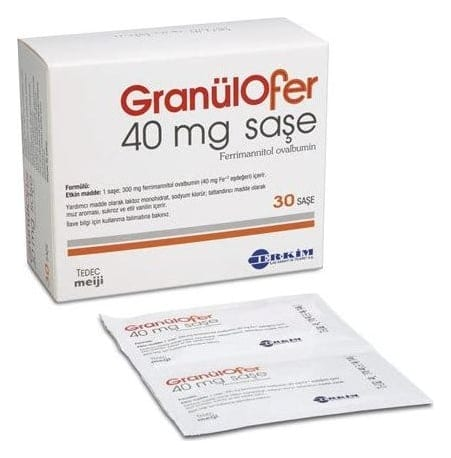

Granulofer 40 mg Saşe, 30 Adet

Ne için kullanılır
KT · Bölüm 1- GRANÜLOFER etkin madde olarak 300 mg ferrimannitol ovalbumin (40 mg Fe+3’e eşdeğer) içerir. - Oral çözelti hazırlamak için granül içeren 30 adet saşedir. - Granüller ince ve kahverengi-kırmızımsı renktedir.
- GRANÜLOFER, demir desteği adı verilen bir ilaç grubundadır. Bu ilaçlar, vücut demirini yerine koyarak etki ederler. - Demir, vücudun kırmızı kan hücreleri üretmesi için ihtiyacı olan bir mineraldir. Vücut yeterli miktarda demir almadığında, sağlıklı olmanız için ihtiyacınız olan sayıda normal kırmızı kan hücrelerini üretemez. Bu duruma, demir eksikliği anemisi denir. - GRANÜLOFER, özellikle demir eksikliği anemisi başta olmak üzere tüm gizli ve belirgin demir eksikliklerinin önlenmesinde (profilaksi) ve tedavisinde kullanılır.